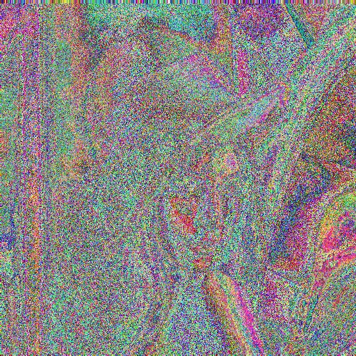
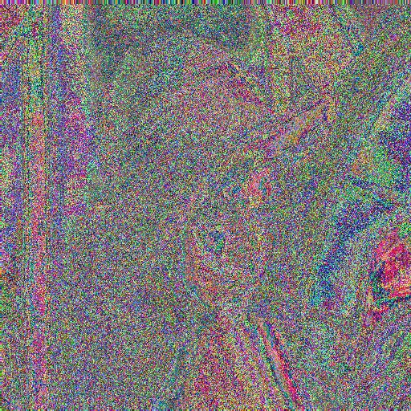

Immagine iniziale:

$ python main.py lena.tga 100 11 12
>>> Prime number: 101
>>> N: 1313
>>> Encryption key A: 37
>>> Decryption key A: 973
>>> A encrypt
>>> B decrypt
>>> File decodificato correttamente
>>> Tempo impiegato: 2.01 secondi
Immagine criptata da A:

Immagine decriptata da B:

$ python bruteforce.py 1313
>>> Welcome to the party
>>>
>>> Inizio l'attacco
>>> Attendi...
>>> Provo con la chiave: '970'
>>> L'attacco non e' andato a buon fine
>>>
>>> Provo con la chiave: '971'
>>> L'attacco non e' andato a buon fine
>>>
>>> Provo con la chiave: '972'
>>> L'attacco non e' andato a buon fine
>>>
>>> Provo con la chiave: '973'
>>>
>>> md5 del file 'lena.tga': 3c733ab519a1b43b1a54a82b13af4fe2
>>> md5 del file 'lena_bruteforce.tga': 3c733ab519a1b43b1a54a82b13af4fe2
>>> La chiave del tesoro e': '973'
>>> E' stata trovata in: 4.73 secondi
>>>
>>> Job done, goodbye